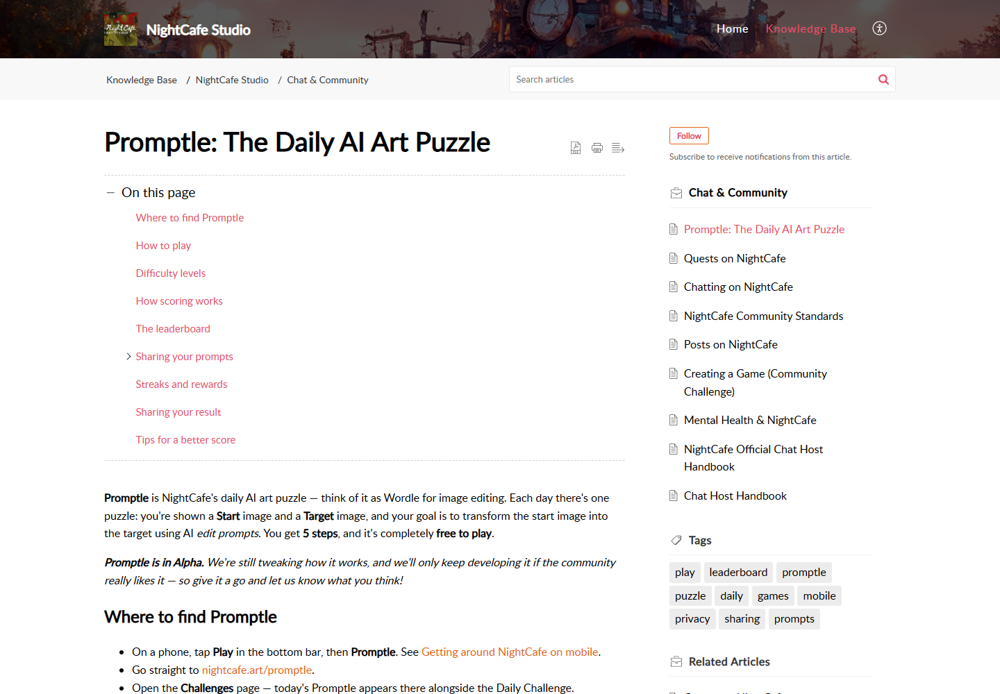

P25-nightcafe-e1 · 用户自述
匿名A自称使用4至5年的免费用户，每天参赛、签到和投票；积分规则调整后表示可能停止。
2026-02-09起；索引日期 · 观察：2026-09-10
长期频率为自述；离开是未来意向，无自然留存和转化分母。
NightCafe 的公开记录主要涉及兴趣创作、每日挑战和作品交流。有人把参赛当练习，有人主要积攒积分，也有人转到站外生成后继续回来聊天。核心作者利用资产检索的案例较少，尚不能解释普通用户为何付款。
| 内容使用者 | 内容供给者 | 付款方 |
|---|---|---|
| 生成兴趣作品、参赛、投票和交流的参与者。 | 公开作品、提示、教程和活动主持者；头部作者不代表多数。 | 需要模型和更多创作能力的订阅者，与只用奖励的用户并存；有退订自述，无账单核验。 |
兴趣或偶发内容任务；不按职业、年龄定义。 · 有用户线索，样本不足
| 观察点 | 群体占比 |
|---|---|
| 3个可区分用户点 | 未知 |
| 问题 | 具体材料 |
|---|---|
| 任务 | 把自己的想法变成图，并在多次尝试中掌握提示和模型。 |
| 触发 | 一个题目、文章需要、节日卡片或个人灵感。 |
| 希望取得的结果 | 获得少量满意作品，试错费用可控。 |
| 困难 | 多主体和参考图可能失败。；出图需求低时订阅额度可能不合适。 |
| 需要的内容 | 新手可执行步骤、输入示例、结果边界、每次尝试预算。 |
| 替代方法 | 其他图片工具、现成素材与传统编辑；B报告换到ChatGPT。 |
| 持续使用记录 | D把挑战当练习；B少量使用且换工具；C因需求不足取消。 |
| 回访假设 | 下一次表达需求和能力进步可能使其回来。 |
| 付费记录 | 免费、曾付费及取消自述并存；没有同群付费率。 |
参与任务相同，但兴趣、同伴与积分动机不可合成单一心理画像。 · 有4个独立参与线索，仍需按动机验证
| 观察点 | 群体占比 |
|---|---|
| 4个可区分用户点 | 未知 |
| 问题 | 具体材料 |
|---|---|
| 任务 | 按题目参赛、看别人作品、投票和聊天。 |
| 触发 | 每日新题目、奖励机会和熟悉的交流圈。 |
| 希望取得的结果 | 获得反馈、社交参与或积累可用额度。 |
| 困难 | 评分与自我评价不一致。；已投入的参与时间与积分规则变化产生冲突。 |
| 需要的内容 | 清晰题目、评选标准、反馈语境和积分生命周期。 |
| 替代方法 | 其他创作社区；生成可在站外完成。 |
| 持续使用记录 | A自述长期每日参与；E站外生成但回站聊天；F奖励驱动投票；D侧重练习。 |
| 回访假设 | 活动节奏可形成习惯，但要分辨创作、社交与攒分。 |
| 付费记录 | A明确自称免费；参与活跃不能当付费意愿。 |
官方挑选的单个作者样本，不累计为独立普通用户点。 · 候选画像：0个独立普通用户点，另有1个官方精选作者访谈
| 观察点 | 群体占比 |
|---|---|
| 0个可区分用户点 | 未知 |
| 问题 | 具体材料 |
|---|---|
| 任务 | 管理大量作品、参与主持或评审，把作品和经验持续提供给社区。 |
| 触发 | 长期创作积累和社区角色。 |
| 希望取得的结果 | 找回作品、延续个人风格和社区关系。 |
| 困难 | 作品数量增长使整理和检索变重。；单个核心作者经验无法代表普通作者收益。 |
| 需要的内容 | 作品搜索、合集、可公开的方法说明和活动记录。 |
| 替代方法 | 个人图库、外部社群和独立作品集。 |
| 持续使用记录 | G在访谈中描述长期创作并认可搜索；未核验实际续费或维护工时。 |
| 回访假设 | 创作兴趣与社区角色可能形成重复投入。 |
| 付费记录 | 提及PRO功能价值；订阅来源、金额与实际续费未知。 |
| 产品提供 | 内容形态 | 如何发挥作用 | 观察结果 | 剩余工作 |
|---|---|---|---|---|
| 日常题目、参赛、投票与交流。 | 主题作品和讨论。 | 题目提供起点，结果获得社区反馈。 | D把参赛当练习；F更偏积分；不能把评分当技能提升证据。 | 题目参与后的学习、作品采用及留存未知。 |
参与自述
| 产品提供 | 内容形态 | 如何发挥作用 | 观察结果 | 剩余工作 |
|---|---|---|---|---|
| 含作品附件与提示段落的图文帖。 | 问题帖、图组、prompt段落。 | 把问题和可参考方法放在同一语境。 | 确认有功能；尚无普通读者复制后成功的证据。 | 开放提示不保证模型、参数、起始图一同继承。 |
官方能力
| 产品提供 | 内容形态 | 如何发挥作用 | 观察结果 | 剩余工作 |
|---|---|---|---|---|
| 社区关系、挑战与PRO搜索。 | 作品库、活动记录和讨论。 | 按兴趣或已有关系回访，靠检索复用旧作。 | G认可检索，E每天回站但在外部生成；A因规则改变考虑离开。 | 没有证明奖励或搜索单独导致续费。 |
持续使用自述与反例
匿名A自称使用4至5年的免费用户，每天参赛、签到和投票；积分规则调整后表示可能停止。
2026-02-09起；索引日期 · 观察：2026-09-10
长期频率为自述；离开是未来意向，无自然留存和转化分母。
匿名B说平时主要做得积分的任务、很少生成；尝试业务文章配图仅少数可用，节日电子卡失败后到ChatGPT完成。
2026-02-09起；索引日期 · 观察：2026-09-10
说明高积分不等于高产出；两平台结果均未独立复现。
匿名C因更新自述取消订阅并表示不需要这么多AI图片；另一用户自述多年付费后取消，这里只计C。
2026-02-09起；索引日期 · 观察：2026-09-10
取消没有订单证据；不是普遍退订率。
匿名D刚开始使用，把挑战作为练习、积分视为额外奖励；两次过度消耗后自设每次预算上限。
2023-01-22至24；索引日期 · 观察：2026-09-10
历史新手个案，无后续留存。
匿名E把主要生成和LoRA训练移到Tensor Art，但称每天仍来NightCafe参加挑战和聊天。
2023-10-08至11；索引日期 · 观察：2026-09-10
2023跨工具自述；当前仍如此未知。
匿名F在评分讨论中称每天先投有限数量作品取得奖励，喜欢题目时才继续投更多。
2022-11；历史 · 观察：2026-09-10
历史投票动机；不能推出投票质量或现行积分机制。
匿名G为长期核心作者并参与社区活动，尤其认可PRO作品搜索对大量创作的检索价值。
2026-06-19 · 观察：2026-09-10
官方选择和推广偏差；不计入普通用户点，但可作为1个明示作者任务观察。
帖子可承载问题、图组和附件；标为prompt的代码块可支持复制/使用。
未标日期 · 观察：2026-09-10
帮助页功能说明，不代表大多数作品都开放方法。
关于页将爱好者创作、作品交流和日常社区活动放在产品叙述中心。
未标日期，访问2026-09-09 · 观察：2026-09-09
既有来源审阅；目标定位不等于真实用户份额。
NightCafe · 动态帮助页，访问2026-09-09 · 查阅：2026-09-09
审阅既有baseline-segments.json及证据报告所载来源，原页上次读取为2026-09-09；未逐页复核。五档套餐、无限生成限制和付费权益；未进入结算。
NightCafe · 未标日期 · 查阅：2026-09-09
审阅既有baseline-segments.json及证据报告所载来源，原页上次读取为2026-09-09；未逐页复核。购买与赚取积分的队列和模型权限差别。
NightCafe · 2022-12-12 · 查阅：2026-09-09
审阅既有baseline-segments.json及证据报告所载来源，原页上次读取为2026-09-09；未逐页复核。只解释广告引入的商业理由，不沿用旧价格或补贴规模。
NightCafe · 未标日期，访问2026-09-09 · 查阅：2026-09-09
审阅既有baseline-segments.json及证据报告所载来源，原页上次读取为2026-09-09；未逐页复核。当前兴趣社群定位与累计10亿作品，非MAU。
NightCafe · 2026-06-19 · 查阅：2026-09-10
访问原页并读取正文/定位相关段落；长期用户个案、活动角色及作品搜索价值；不推断群体比例。
Reddit公开讨论 · 2026-02-09起；索引日期 · 查阅：2026-09-10
正文读取及定位；只采用明确本人使用、取消和任务经历；不同回复者区分匿名键。
Reddit公开讨论 · 2023-01-22至24；索引日期 · 查阅：2026-09-10
正文定位读取；主帖作者参赛练习和自设额度上限；不沿用旧积分价格。
Reddit公开讨论 · 2023-10-08至11；索引日期 · 查阅：2026-09-10
正文定位读取；采用站内社区/站外生成的自述；不采用旧模型品质排行。
Reddit公开讨论 · 2022-11；历史 · 查阅：2026-09-10
正文定位读取；观察一个自述每日先投20项为积分的回复，已区分其与其他作者；不补职业。
NightCafe · 未标日期 · 查阅：2026-09-10
正文访问与既有正文审阅；图文帖、附件及prompt块说明；未采真实站内帖子截图。
NightCafe挑战题面规定任务，参赛作品与Promptle成绩卡展示结果，作者公开的步骤提供学习材料。三者可相互链接，但应分别统计。
一场有主题和阶段的小型游戏。
| 样例 | 可以取得什么 | 后续动作 | 条件与限制 |
|---|---|---|---|
| Creating a Game 官方配置说明。 | 参与规则；告诉作者该做什么、何时交。 | 按题面准备作品并参赛；只读规则。 | 不是实际游戏样本；题面未必有示范作品和合格/不合格对照。 |
适用某题资格的一件作品及其评审结果。
| 样例 | 可以取得什么 | 后续动作 | 条件与限制 |
|---|---|---|---|
| Daily Challenge Eligibility, Rating & Ranking。 | 作品展示和竞赛结果。 | 可以按规则评审或据作品寻找表达方向。 | 排名无法单独说明制作方法；完整提示和输入是否公开取决于内容。 |
在指定起点和目标间进行编辑的每日练习。
| 样例 | 可以取得什么 | 后续动作 | 条件与限制 |
|---|---|---|---|
| Promptle 官方玩法与分享说明。 | 成绩卡为结果摘要；自愿公开的提示步骤提供部分过程。 | 成绩卡可分享/下载；闭题后能看已同意公开者的步骤。 | 默认不分享提示，成绩卡不会自动成为Explore作品；功能仍Alpha。 |
拆官方帮助中的练习结构，不是新完成的一局或真实玩家结果。
| 材料部分 | 观察到什么 | 作用分析 |
|---|---|---|
| 给定起点与目标 | 题目展示两张图并设有限编辑步数。 | 任务范围可比较，作者不需要先自行想题；这适合练习，不代表开放生产任务。 |
| 中间过程 | 每次编辑作用于上一张结果，而非重新作用于起始图。 | 解释步骤顺序为何影响结果；只有最终提示词不足以还原整局。 |
| 结果摘要 | 分享卡包含分数、起点、目标、最终图和步骤颜色。 | 适合快速展示成绩，但颜色不包含实际的编辑文字。 |
| 额外学习层 | 提示分享须主动同意，并在当天题目结束后才向他人显示。 | 把竞争阶段的信息控制与赛后学习分开。 |
玩法文档无法证明多数玩家愿意公开步骤，也不能证明成绩更高的人能处理商业素材。
| 可取得或继承 | 还需准备 | 不能直接迁移 |
|---|---|---|
| 读者可以看已公开的题面和成绩，并在适用时读玩家自愿分享的编辑顺序。 | 相同题目条件、相应模型和输入仍影响结果；换成自有素材需要重新判断。 | 成绩卡不携带完整可执行配置；Promptle 的计分和编辑限制属于特定练习，不能直接等同 MakeNow 任务验收。 |
NightCafe用题目、提交、评审和结果组织日常活动，并提供连续活跃奖励与成员自建游戏。不同活动各自规定刷新时间、参与资格和分享范围；活动量与长期留存的关系未取得数据。
游戏在聊天室内设题，可限定提示、模型和检查规则。
| 执行与分工 | 触发与节奏 | 运营作用（分析） | 失效条件 |
|---|---|---|---|
| 主持人设条件并推进，成员交作品和评审。 | 按每场游戏建立；没有公开统一办赛频次。 | 题目供给可以由成员承担，而不是全部由官方编辑完成。 | 主办者仍需选题和聚人，不能由功能推断有人长期主持。 |
游戏默认凭链接加入；公开聊天室游戏可经 Find a game 被发现。
| 执行与分工 | 触发与节奏 | 运营作用（分析） | 失效条件 |
|---|---|---|---|
| 主持人决定公开，平台提供发现入口。 | 新游戏设为公开时，聊天室也随之公开。 | 分清邀请式活动与面向陌生人的活动。 | 公开设置不是传播效果；不能推定全部聊天室都公开。 |
游戏分等待、投稿、评审和结果；计时结束或主持人操作可推进，也可按全员完成跳转。
| 执行与分工 | 触发与节奏 | 运营作用（分析） | 失效条件 |
|---|---|---|---|
| 主持人配置，系统执行阶段转换。 | 每一阶段到期，或达到已配置的全员完成条件。 | 把需要何时做什么讲清，减少靠临时催促推进。 | 自动推进不能解决低参与、规则误解与评审分歧。 |
连续创作按UTC日计，漏一天清零；Promptle 完成也可计入当日活动并领取未领的奖励。
| 执行与分工 | 触发与节奏 | 运营作用（分析） | 失效条件 |
|---|---|---|---|
| 平台记录与发奖；参与者完成对应动作。 | 每日一次资格；Promptle 下一题在UTC零点更新。 | 新题与连续记录是不同的返回动机。 | 奖励存在不能证明用户喜欢题目；未测停奖后参与。 |
规则区分平均评分和部分挑战的排序，异常票可作废；Daily Checks另查原创演化链。
| 执行与分工 | 触发与节奏 | 运营作用（分析） | 失效条件 |
|---|---|---|---|
| 平台处理资格与异常；成员按所选方式评审。 | 参赛和投票时触发，以每题规则为准。 | 认可需要一个能解释的判定过程。 | 未核争议处理成本、误判及申诉结果；规则不等于执行审计。 |
Creating a Game 官方规则用例；未新建或参与真实游戏。
确认的工作是配置与阶段控制；分析上还需解释题目、处理迟到和争议，工时未知。
这条路径不能证明每场游戏有足够参与者或足够公平，也未证明结果能沉淀为教程。
| 供给者回报 | 参与者回报 | 与付费的连接 |
|---|---|---|
| 徽章体系覆盖主持、游戏参与和发布等行为；未核具体每项资格与金额。 | 连续创作、排名及部分徽章带来资源或认可，徽章奖励进入收件箱领取。 | Promptle 免费；资源奖励是站内使用机会，不是作者现金收入。订阅转化资料不足。 |
| 持续工作 | 尚未量化的成本 | 成立条件 |
|---|---|---|
| 提供或维护题目、规则、阶段、奖励记录，并处理评审异常。 | 分析：自动计分仍需解释争议；活动组织与反作弊成本未公开。 | 有人愿意主持、有人在同一时间参赛，还要有可理解的结果反馈。 |
NightCafe围绕兴趣创作提供订阅与资源购买，官方强调乐趣、表达和归属。该模式可用于研究休闲创作付款，不能直接推算工作流或生产任务的付费需求。
| 付款方 | 收入方式 |
|---|---|
| 想更快尝试模型、持续参加创作和管理作品的个人用户；还有购买赠礼的人。当前帮助页说明没有团队套餐。 | 个人 PRO 订阅、额度加购、一次性额度包与礼品卡；非 PRO 广告形成另一收入来源。 |
官方区分免费赚取的 Relax Credits 与购买得到的 Fast Credits；前者低优先级排队，后者可以更快生成，并可使用部分只收 Fast 的模型。用户的付费触发可能是等待和想用特定模型，而非完全失去免费创作机会。
帮助页列五个 PRO 档位，月价从7.49到62.49美元；按模型范围、生成速度额度、视频和角色能力分层。所谓无限只适用于指定模型和基础生成，快速配额耗尽后转低优先级。帮助页要求最终以结算价格为准，未进入结算。
官方历史解释明确说，付费用户曾承担免费用户成本，引入非 PRO 广告是为了减少这一压力；当前 PRO 仍包含去广告。合理推断：奖励可以帮助持续参与，但需要由广告或真实支付支撑，不能把免费积分的流转本身视作收入。广告当前占比未公开。
官方作者访谈展示一位长期参与者兼任活动主持与评审，分享模型和提示词方法，并将搜索历史作品视为有价值的 PRO 功能。该个案说明作品管理和被认可也会支撑使用；没有核实普遍的作者现金分成机制，积分打赏不直接等于现金。
| 指标 | 披露值 | 期间与对象 | 解释 | 限制 |
|---|---|---|---|---|
| 累计创作产出 | 超过10亿件作品 | 关于页访问2026-09-09，未标统计截止日；NightCafe 平台累计产出 | 平台存在长期、大量的创作活动。 | 作品数含同一用户反复生成与淘汰结果，不能转换为用户人数、活跃或收入。 |
| 经营与用户规模 | 未公开核实 | 截至2026-09-09；营收、付费人数、MAU | 可以研究商业机制，但不足以建立营收或付费转化率排序。 | 官方的 millions of users 未说明统计窗口；连续创作个案不是留存率。 |
NightCafe · 动态帮助页，访问2026-09-09 · 查阅：2026-09-09
五档套餐、无限生成限制和付费权益；未进入结算。
NightCafe · 未标日期 · 查阅：2026-09-09
购买与赚取积分的队列和模型权限差别。
NightCafe · 2022-12-12 · 查阅：2026-09-09
只解释广告引入的商业理由，不沿用旧价格或补贴规模。
NightCafe · 未标日期，访问2026-09-09 · 查阅：2026-09-09
当前兴趣社群定位与累计10亿作品，非MAU。
NightCafe · 2026-06-19 · 查阅：2026-09-09
长期用户个案、活动角色及作品搜索价值；不推断群体比例。
公开规则和官方帮助页可核；当前 Studio 的浏览器访问被工具策略阻止，未实操。所附帮助页截图不代替登录产品体验。

同一题目提供起始图、目标图和有限修改，帮助页明确仍属 Alpha。
当前 Studio 访问受工具策略限制；帮助页可读，不代表已进入或完成游戏。
来源页面 ↗| 阶段 | 用户动作 | 可能遇到的障碍 |
|---|---|---|
| 发现与进入 | 看到朋友成绩或当日题目，进入挑战。 | 有趣的小任务降低起步负担，但可能与工作需求无关。 |
| 第一次做成 | 对照目标完成编辑，查看结果反馈。 | 评分与生产交付标准不同。 |
| 再次使用 | 参加下一题，或比较别人用了什么方法。 | 回访可能由每日题目和奖励共同驱动。 |
| 贡献给别人 | 题目结束后自愿公开步骤、讨论不同做法。 | 分享成绩和公开完整方法应是两个选择。 |
先给起点和目标，解决了新手不知道做什么的问题；赛后再看步骤，给方法讨论一个时机。失败也能留下比较价值，不必只有漂亮作品才能发言。
兴趣创作的持续参与本身有价值，但不等于用户需要生产视频或商品素材。多元拾光应先确定要验证哪类目标。
官网强调让非专业艺术家也能创作。成员挑战可以规定主题、模型或上传限制、投稿时间与投票阶段，形成创作、评审、公布结果的节奏；平台也提供官方每日主题。
内容对象不只是图片，还有作品之间的演化、参与某个主题的关系和小组对话。对于兴趣用户，这些关系可能比交付商业素材更重要，但没有测量其真实贡献。
成员能够举办挑战，意味着活跃参与者有机会承担题目与组织角色。平台无需由少数编辑写出全部内容，但仍需规则、反作弊、资格判断及争议处理。
可先评估成员出题与轮流点评；运营仍需安排规则、进度和争议处理。
当前帮助区分赚取的 Relax 与购买的 Fast，排队与并发条件不同。2025 年一项历史更新把奖励绑定到参赛并完成评审，而非只登录领取。
免费日常资源的帮助页存在新旧差异：有页面强调先创作再领取，另有旧页面描述通知领取。本报告不提供一个声称全账户通用的日赠数额。
订阅、资源增购及部分模型的无限使用有具体条件；某些操作仍会消耗资源。“无限”不意味着每个模型和选项都免费。社区反馈中也有积分有效期变化引发的不满，不能据单帖推算流失率。
日复一日参赛可能是稳定兴趣，也可能主要受奖励或排名驱动。多元拾光要观察活动外是否继续创作、会否带自己的题目、是否愿意花时间帮助别人。
Promptle 官方帮助把起始图、目标图、有限编辑、逐步反馈和成绩卡连接起来；提示词公开默认关闭，题目结束后才可选择展示。该产品仍标 Alpha，不能当作已证实的获客方法。
Daily Challenge 帮助承认过去有人快速乱投票领积分，随后增加间隔和异常过滤。参与数字里可能含领奖动作，这是一条直接的反证。
| 做法 | 依据 | 投入 | 调整条件 |
|---|---|---|---|
| 作者给合格结果和常见失败，运营组织几位种子用户解释做法，经同意整理过程。 | 讨论具体选择，比泛泛晒图更容易产生可复用内容。 | 作者负责题目与解释，产品检查是否符合目标人群，运营承担主持和整理。 | 用户开始尝试别人的方法，或主动带来自己的题目，再增加作品对照。 |
| 做法 | 依据 | 投入 | 调整条件 |
|---|---|---|---|
| 用已有讨论工具和案例页先完成一次活动。 | 评分、反作弊和主持都需要长期投入。奖励参与还可能掩盖真实兴趣。 | 活动规模小，体验较人工，但能记录是谁为什么留下。 | 如果大家只关注奖励，先改招募与题目；不要靠更大奖金制造第二次参与。 |
官方 · 未标日期；含 2019 起步回顾
产品愿景与 Reddit 分享历史自述
官方 · 未标更新日
主题、投稿及组织权限
官方 · 未标更新日
资格、评审与反作弊
官方 · 访问 2026-09-08
创作与领取路径；与旧说明对照
官方 · 未标更新日
资源用途和等待条件
官方 · 未标更新日
订阅的使用边界
官方 · 2025-03-23
历史参赛和评审奖励
官方 · 未标更新日
与较新帮助存在差异，不定统一数额
用户讨论 · 公开帖；精确日期未核
有效期与使用体验个案
官方 · 未标日期；访问 2026-09-09
Alpha、编辑任务、成绩与自愿公开步骤
官方 · 未标日期；访问 2026-09-09
官方承认奖励刷票与治理调整